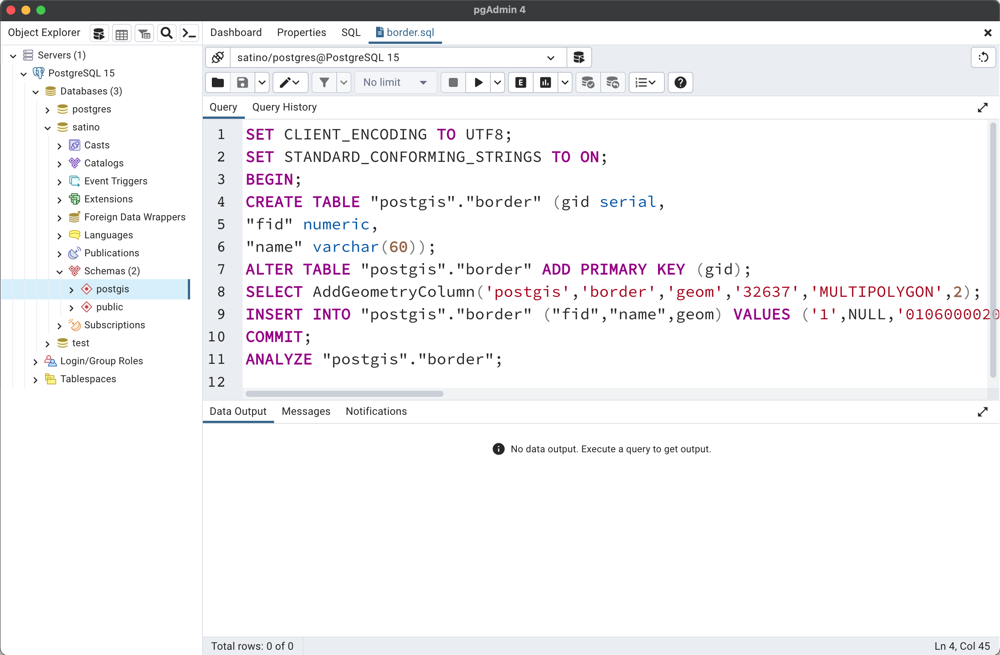

PostGIS. Создание и загрузка данных
Геоинформатика I. Базы пространственных данных
24 сентября 2023 г.
Базовые библиотеки
Функциональность PostGIS опирается на 4 библиотеки:

GDAL выполняет конвертацию между форматами данных и растровые операции
PROJ выполняет преобразования систем координат

GEOS выполняет геометрические операции в 2D

[SF]CGAL выполняет геометрические операции в 3D

Структура базы данных
Структура схемы
Структура схемы (продолжение)
Создание пустой БД
Создание БД (запрос к любой существующей БД)
Создание схемы и активация расширения
CREATE SCHEMA postgis;
GRANT USAGE ON schema postgis to public; -- доступ для всех
CREATE EXTENSION postgis SCHEMA postgis; -- включить postgis для схемы
CREATE EXTENSION postgis_raster SCHEMA postgis; -- включить растры для схемы
ALTER DATABASE satino SET search_path=public,postgis; -- добавить в путь поискаПроверка установки
Внимание
Установка расширения postgis через графический интерфейс не позволяет выбрать схему и выполняется в схеме public.
Типы пространственных данных
В PostGIS существует 4 типа пространственных данных
| Тип | Особенности | |
|---|---|---|
| 1 | geometry |
Векторные данные в декартовой системе координат |
| 2 | geography |
Векторные данные в угловой системе координат |
| 3 | raster |
Растровые данные (многомерные) |
| 4 | topology |
Топологические данные (вершины и грани). |
Топологические данные
Тип данных topology используется для хранения топологических покрытий и сетевых данных. Для анализа последних применяется отдельное расширение pgRouting.
Интересный факт
PostGIS позволяет хранить несколько пространственных столбцов в одной таблице
Каталог систем координат
Системы координат хранятся в таблице spatial_ref_sys
SRS vs CRS
Несмотря на то, что каталог имеет называется SRS (Spatial Reference Systems), по факту он хранит описание CRS (Coordinate Reference Systems).
Терминология WKT
Терминология WKT при описании CRS может не полностью соответствовать стандартами ISO / OGC
Создание пространственных таблиц
При создании пространственных таблиц необходимо указать
уникальный идентификатор
геометрический столбец заданного типа и КСО
Например, таблица точек гидрологических промеров может иметь следующий состав:
Ручное создание данных
Вставка новых строк выполняется посредством стандартной команды INSERT:
INSERT INTO postgis.hydro_measures(fid, depth, geom)
VALUES
(1, 1.23, ST_GeomFromText('POINT (36.37802128 55.21121827)')),
(2, 1.57, ST_GeomFromText('POINT (36.37834198 55.21127511)')),
(3, 0.78, ST_GeomFromText('POINT (36.37861509 55.21139158)')),
(4, 0.95, ST_GeomFromText('POINT (36.37905934 55.21137259)')),
(5, 1.11, ST_GeomFromText('POINT (36.37938529 55.21125473)'));Альтернативный синтаксис через преобразование строки к типу данных:
INSERT INTO postgis.hydro_measures(fid, depth, geom)
VALUES
(1, 1.23, 'POINT (36.37802128 55.21121827)'::geography),
(2, 1.57, 'POINT (36.37834198 55.21127511)'::geography),
(3, 0.78, 'POINT (36.37861509 55.21139158)'::geography),
(4, 0.95, 'POINT (36.37905934 55.21137259)'::geography),
(5, 1.11, 'POINT (36.37938529 55.21125473)'::geography);Импорт из CSV
Для импорта можно использовать команду COPY :
CREATE TABLE IF NOT EXISTS postgis.geo_points (
fid serial primary key,
name text,
comment text,
height_abs real,
height_add real,
type text,
x real,
y real
);
DELETE FROM postgis.geo_points; -- опционально, если хотите очистить
COPY postgis.geo_points
FROM '/Volumes/Data/Spatial/Satino/geo_points.csv'
DELIMITER as ','
CSV HEADER;Непространственная таблица
Полученная таблица не является пространственной:
Активация пространственных точек
Импорт из шейп-файла
Вместе с PostGIS устанавливаются утилиты shp2pgsql и pgsql2shp , позволяющие импортировать из и экспортировать данные в формат Shapefile.
Last login: Fri Sep 22 14:36:05 on console
(base) tsamsonov@Butterfly ~ % shp2pgsql
RELEASE: 3.3.4 (3.3.4)
USAGE: shp2pgsql [<options>] <shapefile> [[<schema>.]<table>]
OPTIONS:
-s [<from>:]<srid> Set the SRID field. Defaults to 0.
Optionally reprojects from given SRID.
(-d|a|c|p) These are mutually exclusive options:
-d Drops the table, then recreates it and populates
it with current shape file data.
-a Appends shape file into current table, must be
exactly the same table schema.
-c Creates a new table and populates it, this is the
default if you do not specify any options.
-p Prepare mode, only creates the table.shp2pgsql на Windows
При установке путь к утилите не прописывается в переменные среды:
shp2pgsql на Windows
На Windows утилита по умолчанию находится в папке C:\Program Files\PostgreSQL\<version>\bin
shp2pgsql на Windows
Чтобы не вводить каждый раз полный путь к программе, необходимо прописать его в переменные окружения:
После этого перезапустите командную строку, и утилита будет запускаться:
Импорт из шейп-файла
Если запустить без параметров, то будет только диагностика без импорта:
tsamsonov@Butterfly satino_base % shp2pgsql border.shp postgis.border
Field fid is an FTDouble with width 20 and precision 0
Shapefile type: Polygon
Postgis type: MULTIPOLYGON[2]
SET CLIENT_ENCODING TO UTF8;
SET STANDARD_CONFORMING_STRINGS TO ON;
BEGIN;
CREATE TABLE "postgis"."border" (gid serial,
"fid" numeric,
"name" varchar(60));
ALTER TABLE "postgis"."border" ADD PRIMARY KEY (gid);
SELECT AddGeometryColumn('postgis','border','geom','0','MULTIPOLYGON',2);
INSERT INTO "postgis"."border" ("fid","name",geom) VALUES ('1',NULL,'0106000000010000000103000000010000000500000030FF21BDE4231441BAFC8774DB575741503789C1D8231441C05B2081C35B5741F04A59C6FA711441C442AD71C45B5741F0DBD7C106721441BCE31465DC57574130FF21BDE4231441BAFC8774DB575741');
COMMIT;
ANALYZE "postgis"."border";
tsamsonov@Butterfly satino_base % Импорт из шейп-файла
По факту утилита создает SQL-запрос, который можно направить в файл через >:
Полученный файл можно открыть средствами СУБД и запустить.
Большие файлы
При импорте больших файлов рекомендуется использовать параметр -D, при котором будет создаваться не SQL-запрос, а бинарный файл дампа базы данных.

Импорт через psql
В большинстве случаев однако запрос не пишут в файл, а направляют через пайп (|) в psql — командный интерфейс PostgreSQL. Необходимо указать как минимум базу данных (-d) и имя пользователя (-U):
После ввода пароля данные будут записаны в указанную таблицу:
Универсальный импорт через ogr2ogr
ogr2ogr — утилита GDAL, универсальный конвертер форматов данных.
Вместе с ней идет утилита ogrinfo, для анализа входных данных:
ogrinfo
Поддерживаемые форматы можно выяснить через ogr2ogr --formats :
(base) tsamsonov@Butterfly Satino % ogr2ogr --formats
Supported Formats:
FITS -raster,vector- (rw+): Flexible Image Transport System
PCIDSK -raster,vector- (rw+v): PCIDSK Database File
netCDF -raster,multidimensional raster,vector- (rw+s): Network Common Data Format
PDS4 -raster,vector- (rw+vs): NASA Planetary Data System 4
VICAR -raster,vector- (rw+v): MIPL VICAR file
JP2OpenJPEG -raster,vector- (rwv): JPEG-2000 driver based on OpenJPEG library
PDF -raster,vector- (rw+vs): Geospatial PDF
MBTiles -raster,vector- (rw+v): MBTiles
BAG -raster,multidimensional raster,vector- (rw+v): Bathymetry Attributed Grid
EEDA -vector- (ro): Earth Engine Data API
OGCAPI -raster,vector- (rov): OGCAPI
ESRI Shapefile -vector- (rw+v): ESRI Shapefile
MapInfo File -vector- (rw+v): MapInfo File
...Параметры ogr2ogr
Данная программа содержит множество параметров (см. документацию):
(base) tsamsonov@Butterfly Satino % ogr2ogr
Usage: ogr2ogr [--help-general] [-skipfailures] [-append | -upsert] [-update]
[-select field_list] [-where restricted_where|@filename]
[-progress] [-sql <sql statement>|@filename] [-dialect dialect]
[-preserve_fid] [-fid FID] [-limit nb_features]
[-spat xmin ymin xmax ymax] [-spat_srs srs_def] [-geomfield field]
[-a_srs srs_def] [-t_srs srs_def] [-s_srs srs_def] [-ct string]
[-f format_name] [-overwrite] [[-dsco NAME=VALUE] ...]
dst_datasource_name src_datasource_name
[-lco NAME=VALUE] [-nln name]
[-nlt type|PROMOTE_TO_MULTI|CONVERT_TO_LINEAR|CONVERT_TO_CURVE]
[-dim XY|XYZ|XYM|XYZM|layer_dim] [layer [layer ...]]
Advanced options :
[-gt n] [-ds_transaction]
[[-oo NAME=VALUE] ...] [[-doo NAME=VALUE] ...]
[-clipsrc [xmin ymin xmax ymax]|WKT|datasource|spat_extent]
...Импорт GeoPackage через ogr2ogr
Для импорта необходимо указать формат входного файла (f), параметры подключения, а также параметры, специфичные для выходного формата (-lco).
Импорт одного слоя (landscapes)
ogr2ogr
-f PostgreSQL PG:"dbname=satino user=postgres password=....."
satino_thematic.gpkg landscapes
-lco GEOMETRY_NAME=geom -lco SCHEMA=postgisИмпорт всех слоев
Библиография
Самсонов Т. Е. Геоинформатика: курс лекций